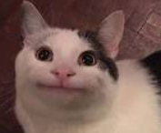
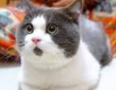
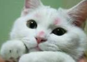

고양이갤러리
2018년 6월 28일
러시아산으로 추측되나 2차대전 때 거의 사라지다시피 했던 혈통의 맥을 잇는 과정에서 스칸디나비아와 영국의 고양이들이 교배에 참가했다고 한다. 푸르스름한 은빛 털색과 신비한 초록 눈빛, 수줍음이 많으면서도 어쩐지 웃고 있는 듯한 표정, 늘씬하면서도 다부진 체격에서 넘치는 매력은 ‘단모종의 귀족’이라는 별명에 어긋남이 없다. [네이버 지식백과] 러시안블루 [Russian Blue] (고양이 기르기, 2004. 9. 10., 김영사)
신16세기 터키 앙카라에서 프랑스로 전해진 터키시 앙고라 고양이는 귀족들에게 큰 인기를 얻었다. 그 중 리슐리외 추기경은 고양이를 무척 아낀 것으로 유명하다. 그는 신비한 오드아이 눈빛과 아름다운 하얀 털을 가진 터키쉬 앙고라의 모습에 매료 되어 더욱 특별하게 아꼈다고 한다. 그가 죽을 당시 유언 중 하나로 고양이들을 죽을 때까지 돌보는 조건으로 하녀 한 사람에게 연금과 고양이와 같이 살 집도 하나 남겼다고 한다.
긴 털을 가진 장모종의 대표적인 품종으로 털이 가늘고 길고 풍성하다. 털에서는 부드러운 감촉과 윤기가 나는데 목과 가슴에 장식털이 많다. 털의 색깔과 무늬의 모양에 따라 페르시아고양이의 종류를 구분하는데 매우 다양하다. 털이 길어 커 보이지만 실제로 체형은 중간 정도이며 튼튼하다. 다리는 굵고 짧은 편이며 꼬리 역시 굵고 짧지만 털이 매우 길고 풍성하게 나 있다. 얼굴은 다른 품종과는 다르게 넓고 둥글며 뺨은 볼록하다. 두 눈 사이의 간격은 멀고 눈 모양은 둥글고 크다. 코는 폭이 넓고 짧은데 일부 페르시아고양이는 코가 위로 들려있는 들창코 모양인 경우도 있다. 페르시안 친칠라라는 페르시안에서 갈라져 나온 품종이 있다.